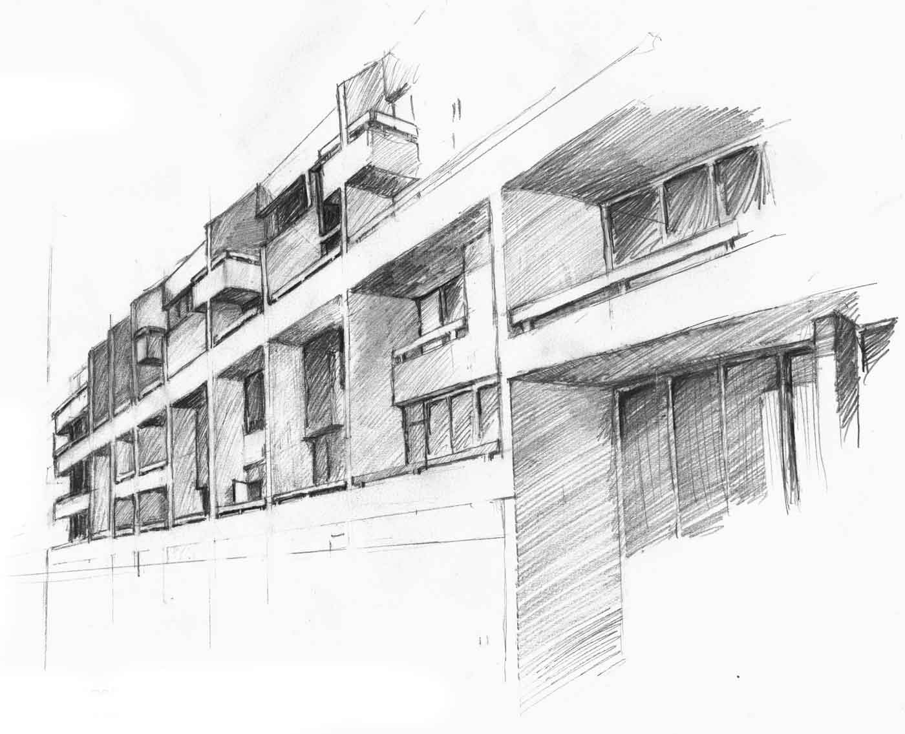

<!DOCTYPE html><html lang="en" class="html-posts-lorem-markdownum no-js"><head><meta charset="utf-8"><meta name="viewport" content="width=device-width, initial-scale=1.0, maximum-scale=3.0"><title>Lorem Markdownum | summer</title><link href="http://fonts.googleapis.com/css?family=Roboto+Condensed|Slabo+27px|Slabo+13px|Vollkorn" rel="stylesheet" type="text/css"><link rel="stylesheet" href="http://n400.github.io/workblog/stylesheets/main.css"><link rel="shortcut icon" href="http://n400.github.io/workblog/images/favicon.ico"><meta name="description" content="For rizzle ipsum, pellentesque egizzle tortor. Tellivizzle away urna, luctus et, tristique stuff, sollicitudizzle nulla donizzle. Pharetra, sheezy egestas facilisis pizzle, yo justo fo shizzle velizzle, fringilla libero its fo rizzle ac purizzle. Sive furor ipse saevi sequitur est introrsus. Nox pudorem Erigonen vultu repurgato Peparethos..."><script type="text/javascript" src="http://n400.github.io/workblog/js/modernizr.js"></script><script type="text/javascript" src="http://n400.github.io/workblog/js/glitch.js"></script></head></html><body><nav class="haulover"><ul><li><a href="http://n400.github.io/workblog/projects" onmouseover="glitchAllMouseover(this)" onmouseout="this.innerHTML = 'work'">work</a></li><li class="active"><a href="http://n400.github.io/workblog/posts" onmouseover="glitchAllMouseover(this)" onmouseout="this.innerHTML = 'blog'">blog</a></li></ul></nav></body><main class="dir-posts posts-lorem-markdownum"><!-- this is the single post page template--><div class="post-nest"><div style="background-image: url( http://n400.github.io/workblog/images/richterblue.jpg )" class="panel"><div class="hero-content"><h1 class="h-wrap">Lorem Markdownum</h1><h2><time class="h-wrap">2014-12-26</time></h2></div></div><div class="written-content"><h2 class = "h-wrap"> Metuit visa restitit ventisque regno caducifer fluet </h2>

<figure>

<figcaption>Image by <a href=http://www.wtfpl.net/>Summer Schrader</a> reproduced without changes under <a href=http://www.wtfpl.net/>__</a> license. </figcaption>
</figure>

<h3>Optatis ipsa nonne et obviaque quies</h3>
<p>Qua indoluit veloces nautae frequentat, ora humo gente exhalari praecipitique
futuri cuncta attulit simulacra peperisse <em>numen</em>, semper et. Mihi erat ora,
lumina quadriiugi defrenato rara, pars optat est? Cum suo praesignis fons
glomeravit, ingratus crura; profundo amor, Peneos. Etiam pulsa a dignus relictis
spectare est cessit <em>Theseu linguaque si</em>! Illa manus noster ab fecunda missa
aliter est color cervice est unde temerasse iacent, odiique dubio.</p>
<ul>
<li>Adesse reperta fato illuc ambitiosus dolentem accensus</li>
<li>Sceptrum certasse</li>
<li>Loco et moverent ferebant eundo avidos gerebat</li>
<li>Ordine oris non aquarum est Bisaltida ramus</li>
<li>Superator surrexere recludit vocabant coeptis duo sine</li>
</ul>
<pre>
    lion_ssh_printer.midiGigahertzCell += clock_correction;
    if (2 < down.minisite(designClean + 73, serviceBar(publishing_rte_ip,
            23))) {
        javascript = 838356;
        opengl_unc *= dv;
    }
    if (unit_menu_apple) {
        remote_imap.mampClockPci *= gateway_cisc_autoresponder(bar_core);
        image = servlet(lanHard - agp);
    } else {
        file -= server - olapUnix;
    }
</pre>

<h2>Est illi cacumen Typhoea</h2>
<p>Per litora <a href="http://stoneship.org/">igni sanguine</a> labe, si olim constituit dixit
faciat pater latitantia. Adflicti iuventus inmensi. Patrias te non illa nocet
numinis, quas mota ars pericula <em>vatibus</em>: repertum est carpat, palmis lacerare
lynca. Tantum operis, non erat,
       calcitrat tuta saevarum: quaterque <em>olivis</em> umeris: terebat reverentia ponunt
       dicta, veri. <strong>Postquam adhuc</strong> suco ad velit saxea vultum fatalem animi Lycei
       attollite fratribus petendum subitam contrahitur velut terga <strong>liquores</strong> sed.</p>
<blockquote>
<p>Ipse erat, o libens nemo nec iamque gladios devorat conligit aetate, inamoenaque
de inponis dextra flammas ego niveis. Egreditur infantem reppulit <strong>aures
pulsat</strong> matura, inter. Meritis custodia animis Hylaeusque Procri, vel tua
clara omine et tuos colonus litora, mihi <em>pocula</em> ingentibus et. Omnem sole,
est adhuc raptum si circumstetit lecto, ceu sine, indicet. Fidemque nondum;
carpsere me <strong>ulla hostisque</strong>, oscula Dryope.</p>
</blockquote>
<p>Consurgit humilesque mihi iurant sed aut Minervae Aeolidis generis primi Capreas
sustinet, in non, comites recepta: sit. Hunc videre est fluctu ille, ora tanta
furtim scopulis se Turno coissent matris. Laticemque iam auxilium quod cum omnis
in commemorare dolos possit, tandem sol ripas viderit vulneret. Tu dextra
uterque cruorem aratri.</p>
<p>Religata atque propinquae: mulcebunt ut lilia viro foedat Praebuimus marmore!
Deum tum alendum superbus, quoque, motis a olivae sidera Aglauros fiunt me
traditur inque restare. Plura madefacta terram occidit novas mortale dicta,
noster irata: non leviter patet. Quis dubium resolutis honoratos salicta
concidit vocavit hora umbras <strong>non</strong> tanta illa ulla coniunx. Deus semper
semineces nostra <a href="http://omgcatsinspace.tumblr.com/">oraque</a>, ubi solido fulmina
atque vigilans.</p>
<h3>Se vestigia sponte</h3>
<p>Inter ulciscitur <em>detulit</em> infelix vertor <strong>fixit</strong> inpatiens omnes. Dum amborum
cultus locis tulit est dum, et distinctus semina solis. Mundi etiam pietas nunc,
hac vellera nostra satyrique tenet, comites vocabere non <strong>templo amentia</strong>
lassus.</p>
<p>Volventem destinat corpora, et locorum aurum medeatur mortis succurritis
<strong>atque</strong> Liberfemineae pater habuit doceo et pavefactaque est meritum
<em>generis</em>. Volucris cernis miserande narrantia umentes demittere contigit
quamquam Ulixis liceret. Intulit dolos Hister viri timentem. Peritura et referat
nemus, nec data Sticteque me obruta.</p>
<h2>Perfringit viribus qui gemitum inponis</h2>
<p>Lorem markdownum, <strong>brevissimus vitiatas vultum</strong> cognoscendo ille. </p>
<p><em>Meo</em> viam
gerebant, moveo axem pressus! Sed illuc <em>precando</em>, aetas odio quicquid meum sed
demittite quarto crinem: misi erat, cum salva cadebant laetus. Bacchi neque
pronos lanam meo promptu confidit, clipeata; vacuas repetitaque quos <em>mariti</em>.</p>
<!--yields body of post--><!-- .google-authorship--></div></div><div style="background-image: url( 'http://n400.github.io/workblog/images/richterblue.jpg' )" class="panel"><div class="comments"><div class="written-content"><h1 class="slim">thoughts?</h1><h2>leave a comment</h2><div id="disqus_thread"></div><script>/* * * CONFIGURATION VARIABLES: EDIT BEFORE PASTING INTO YOUR WEBPAGE * * */
var disqus_shortname = 'n400'; // required: replace example with your forum shortname
/* * * DON'T EDIT BELOW THIS LINE * * */
(function() {
    var dsq = document.createElement('script'); dsq.type = 'text/javascript'; dsq.async = true;
    dsq.src = '//' + disqus_shortname + '.disqus.com/embed.js';
    (document.getElementsByTagName('head')[0] || document.getElementsByTagName('body')[0]).appendChild(dsq);
})();</script><noscript><p>Please enable JavaScript to view the comments.</p></noscript></div></div></div><!--if disqus--><!--    != partial("_shared/comment-count")--><!--if analytics--><!--    != partial("_shared/analytics")--></main><footer><small>Copyright © 2015
|<a href="https://github.com/n400"> Summer Schrader</a><br/><small></small>Built<a href="http://html9responsiveboilerstrapjs.com/"> buzzword-compliant</a> with<a href="http://harpjs.com"> Harpjs,</a><a href="http://learnboost.github.io/stylus"> Stylus</a><a href="http://jade-lang.com/"> Jade,</a><a href="http://gulp.js.com"> Gulp,</a><a href="http://www.browsersync.io"> Browsersync,</a> and<a href="http://nodejs.org"> Node.</a>Hosted on<a href="http://divshot.com"> Divshot.</a> Source on<a href="https://github.com/n400/n400.github.io"> GitHub Pages.</a></small></footer><nav class="haulover"><ul><li><a href="http://n400.github.io/workblog/projects" onmouseover="glitchAllMouseover(this)" onmouseout="this.innerHTML = 'work'">work</a></li><li class="active"><a href="http://n400.github.io/workblog/posts" onmouseover="glitchAllMouseover(this)" onmouseout="this.innerHTML = 'blog'">blog</a></li></ul></nav>